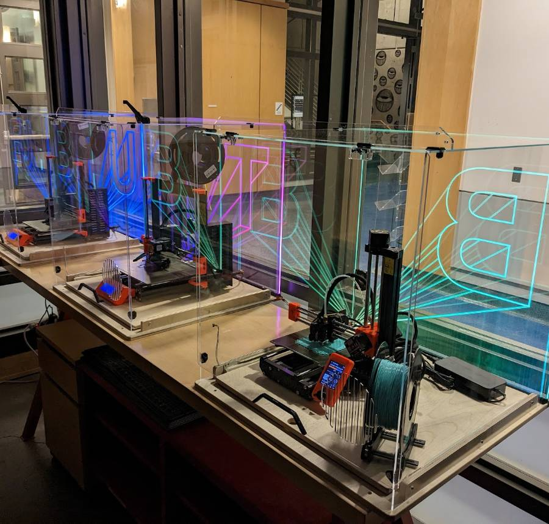

3D Printers
3D printing equipment and materials are labeled purple.
! PRUSA SLICER software is provided and required !
The Revolution Will Be Printed...

3D printers in the main space are for intended use only! Extra 3D printers are available for experimenting. Contact a Mischief Maker to set it up. We got you!
3D printing is also the subject of some workshops. See workshops on the BTU Lab Calendar.
Jobs are run on a first-come-first-served basis***.
"Intended" Use of BTU Lab 3D Printers
- Do not alter any part of the machine.
- BTU uses PLA and ABS material only, unless other materials are agreed upon with BTU staff.
- Do not train yourself on the machine. There's more to it than YouTube thinks... We're here to help you learn, hands on.
- Do not use other slicing software. Use Prusa Slicer, as specified for each machine.
*** We are updating our file system to make your work easier. For now, please work directly with BTU staff to get your parts going.
Equipment & Materials
- Prusa Mk4 FDM printer (x3)
- Prusa Mk3S+ FDM printer (x3)
- Prusa MINI2 FDM printer (x4)
- Extra FDM printers for experimental projects. See staff!
- 1.75mm PLA filament (black, and random colors)
- 1.75mm ABS filament (black, and random colors)
- Other materials allowed only with staff approval.